A client portal for a tax-debt relief company — case status, payments, documents, appointments and a tax organizer, all in one guided dashboard. I designed the product end to end: UX, UI and the design system.
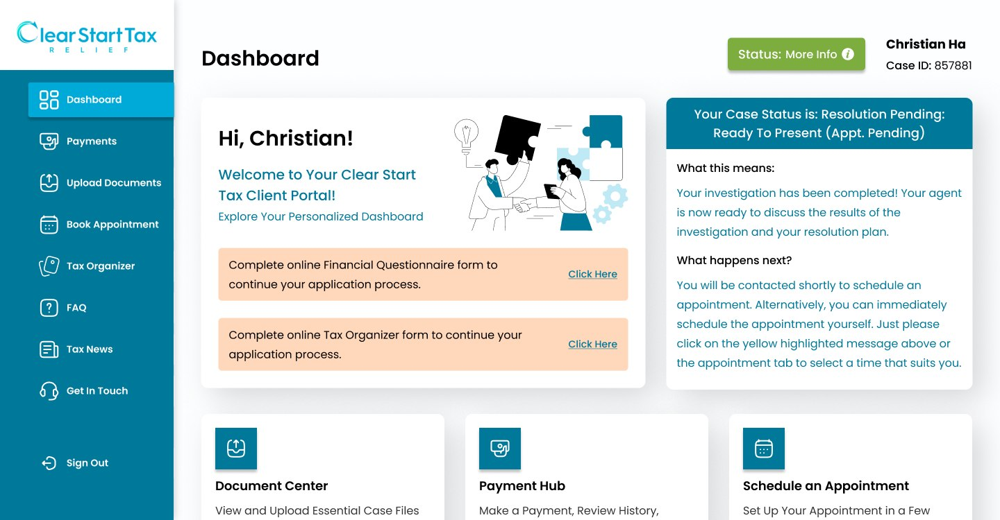
Design the Clear Start Tax client portal end to end — a web dashboard, and a companion mobile app, that carry a client through a tax-debt resolution case from sign-in to close. The build covers authentication, a status-first dashboard, billing and payments, document upload, appointment scheduling, a multi-year tax organizer, and self-serve support (FAQ, tax news, contact) — on both platforms.
A note on context: this is a self-directed redesign, not a shipped or client product — I used it to practice a status-first B2C dashboard and its mobile counterpart end to end, from research through a full design system.
My role spanned the whole product: UX — information architecture and flows for a process most clients only go through once; UI — every screen; and the design system — the sidebar navigation, status pills, tables and form patterns reused across every module.
Clients arrive at a tax-debt relief company anxious and often mid-crisis — wage garnishments, notices, years of unfiled returns. Their case moves through a long, multi-step resolution process, but without a portal that process is invisible: status updates come by phone or email, documents get lost in inboxes, and a client has no way to tell whether the next move is theirs or their case officer's.
Goal: replace uncertainty with a guided dashboard — one place that always answers "where is my case, and what do I need to do next?"
I mapped the resolution process end to end with the team — from first document upload through case review, negotiation and close — to see exactly where clients dropped off or called in confused. Three decisions followed.
Status leads, everything else follows — the dashboard opens on a plain-language case status ("Resolution Pending — Ready to Present") before any action item. Every card ends in a next step — a status explanation is only useful paired with a "Click Here" that does something. And the sidebar is the map — Payments, Documents, Appointments and the Tax Organizer live as permanent, always-visible destinations, not a maze of links inside the dashboard.
The dashboard opens with the client's name, case ID and status badge, then a status card that answers what this means and what happens next in plain language — with the two most common next actions (the Financial Questionnaire, the Tax Organizer) surfaced as direct links, not buried in a menu.
Payments separates Billing Summary from payment history, with balance, amount due, past due and the next due date visible before any table. Document upload is a single drag-and-drop zone with no nested folders to get lost in. Appointment booking shows the assigned officer, time zone and available slots on one screen. And the Tax Organizer tracks progress as a plain checklist across every tax year in scope — clear at a glance which years are done and which still need attention.
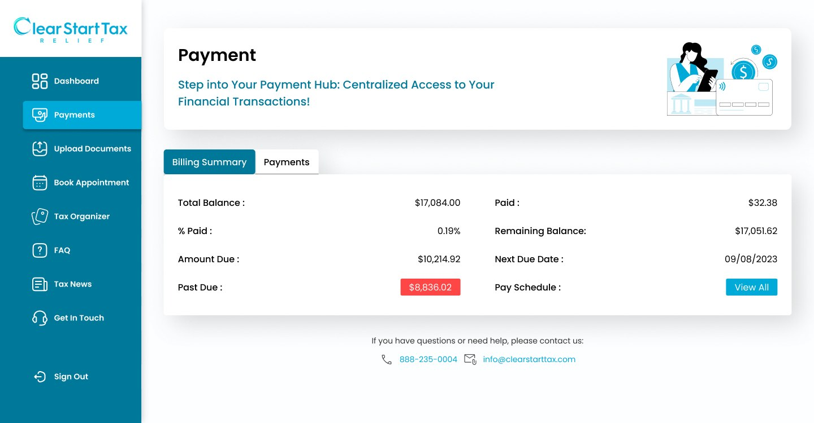
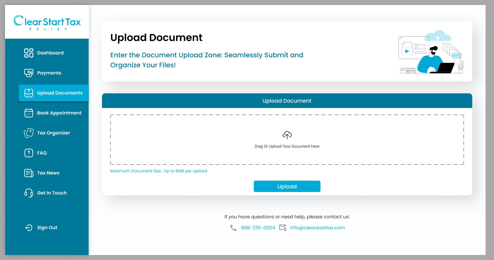
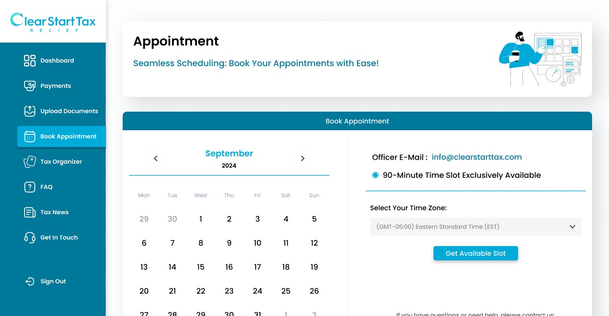
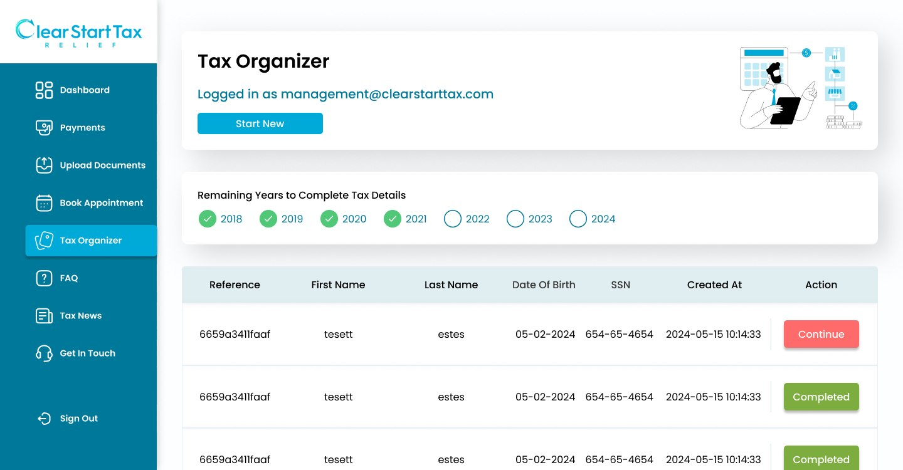
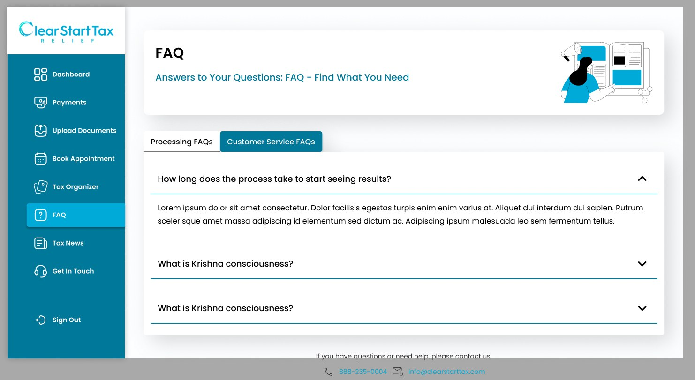
The same portal, rebuilt for a phone. A tax case doesn't pause for business hours — clients wanted to check their status, upload a document or confirm an appointment from wherever they were. The mobile app carries the same information hierarchy as the web dashboard — case status first, then a clear next step — with the sidebar collapsed into a menu and every form simplified for a single thumb.
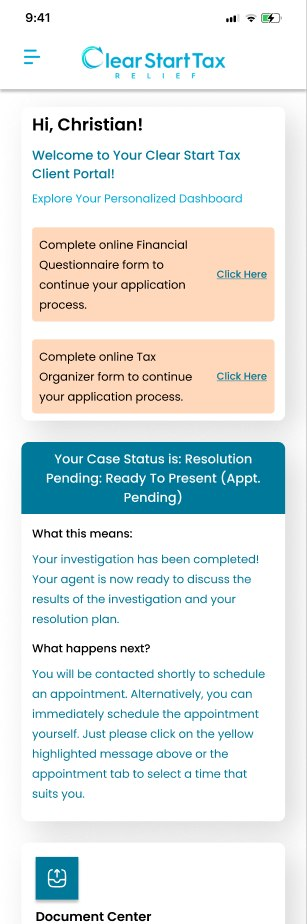
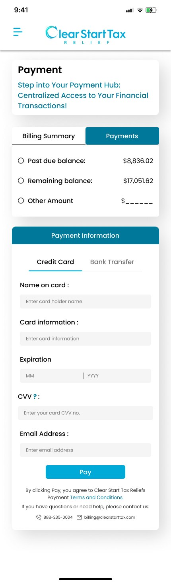
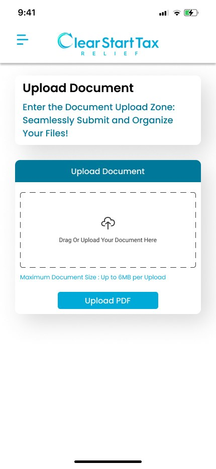
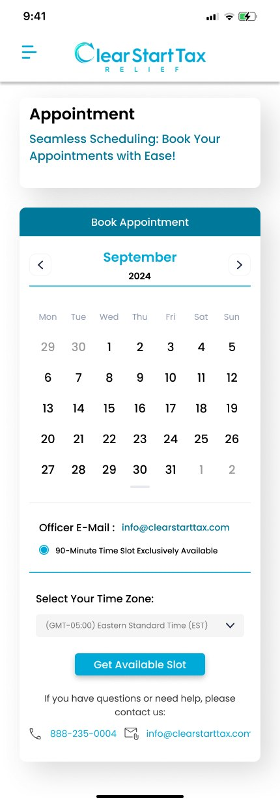
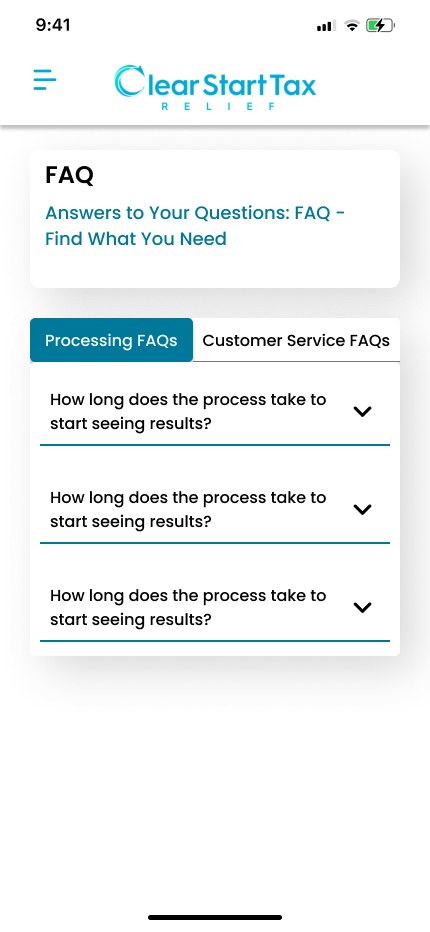